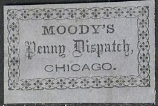
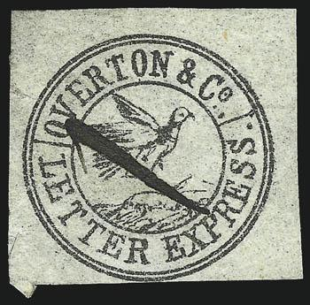
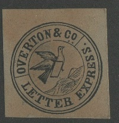
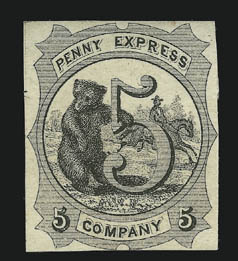

(Genuine, reduced size)
Return To Catalogue - United States locals overview - Mason to Mills - Pony Express Wells Fargo & Co - United States
Note: on my website many of the
pictures can not be seen! They are of course present in the cd's;
contact me if you want to purchase the catalogue.
(Genuine, reduced size)
"Moody's Penny Despatch Chicago" surrounded by ornamental border. This stamp was issued in 1856.

According to me, this forgery has 12 flower like patterns on top and below, while the genuine stamp has 13 of such patterns.
A bogus design with inscriptin 'MOODY'S City Dispatch CHICAGO.'
Another bogus design, I've also seen it in black on yellow.
Another bogus design.
Moodie's City Dispatch Post, bogus issue.
Image obtained thanks to a Siegel auction
A very primitive stamp was issued by Morton Postage in Philadelphia.
1847 Inscription "NEW YORK CITY EXPRESS", eagle on globe
(Images obtained from a Siegel auction)
2 c black on green 2 c orange
1844 Flying dove, inscription "OVERTON & Co LETTER EXPRESS."

(Genuine, image obtained from a Siegel auction)
(Probably genuine on letter with 'PAID' cancel)
(6 c) black on green
Reprints/ forgeries:

Taylor forgery. Again, the 'C' and 'O'
of 'CO' are of the same size
Note the broad 'R's in the above forgery. The top of the 'T' of 'OVERTON' is slanting to the right. I have also seen this forgery in the colours black on red and blue. There is no dot behind the word 'EXPRESS'. Another forgery, very similar to the Taylor forgery exist, with more straight wings.
What are these? Circular designs with 'OVERTON & CO EXPRESS'
inscription.
1866 Bear, horse with rider, inscription "PENNY EXPRESS"

Reduced sizes, Penny Express Express, bear and man on pony
5 c black 5 c blue 5 c red
Two types of forgeries are known.
In this forgery, the small "5"s at each bottom are replaced by stars.
Second forgery, "5"s solid. I've seen this forgery in
the colors blue, black on blue, red, black and black on grey.
Here, the small "5"s at each bottom are solid (not with white centers as in the genuine stamps).
(Genuine, reduced size, image obtained from a Siegel auction)
A black on green stamp was issued in 1851 by Pinkney's Express Post. This stamp is very rare.
(Genuine, reduced size)
This local stamp was issued around 1862 and exists in black on various paper colours (white, yellow, blue, lilac).
A similar stamp with a totally different border; a forgery
according to the Patton US locals book.
(Stamp on cover)
These stamps were issued in 1844 and exist in the colours: black on yellow, blue, black, red and orange. They are relatively common in unused condition.
Reprints exist.
Forgeries exist also, example:
The head of the woman is slanting too much forwards in this
forgery. The "R" of "LETTER" and the first
"E" of "EXPRESS" are too far apart.
Scott also made a forgery of at least the black on yellow, blue and black stamp:
Scott forgery, design quite plane and "$1" erased from
the bottom part.
(Scott forgery, reduced size)
(Pomeroy & Co Express, train)
'Pomeroy & Co Express': This is an express label issued in 1844 (source: http://alphabetilately.com/US-trains-00.html ). There also seem to exist a red on white label. Many reproductions exist.
{kind=link}
{kind=link}